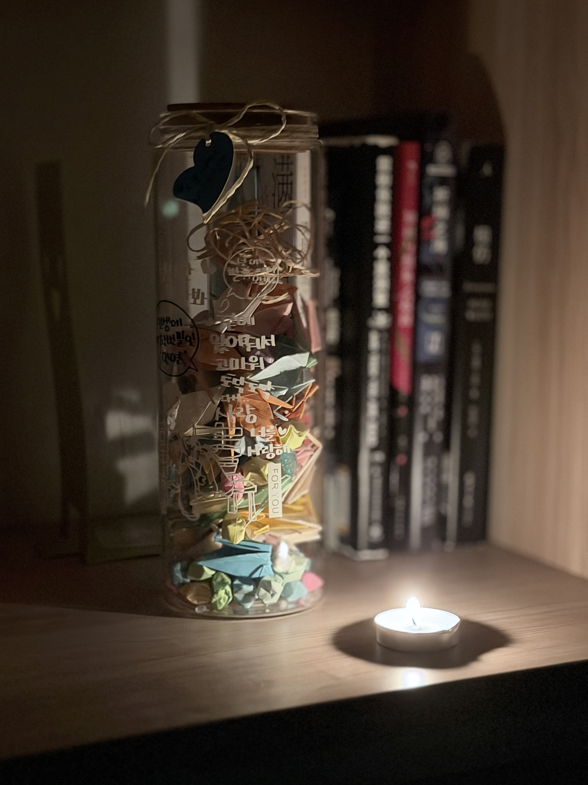

炽烈已极
@AnIncandescence
这个瓶子里原本还有装着小纸条的胶囊，里面写着愿望，不知道到现在有没有实现的，但是至少胶囊我有很多了

炽烈已极
@AnIncandescence
“遗物”
你不会知道小孩子脑子的世界是怎样运行的…
我曾经认为，用叠的千纸鹤和幸运星装满瓶子再虔诚许愿，死去的小动物就会回来陪我。不，或许要更多，一千只，一万只
从什么时候起再也不会这样幻想了，是因为死亡于你太陌生吗？还是终于接受了世界的规律
那么这是“你”的遗物。或者说，你的一部分。 https://t.co/wXJhf3z4pF